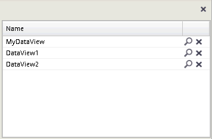
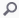

You can manage saved data views using the "list of data views", which opens after clicking the button: . Each saved data view is automatically added to this list.

A URL for each data view can be displayed by clicking the  icon located beside the corresponding data view.
A data view can be removed from the list by clicking on the corresponding icon. Be careful when removing data views, as this action cannot be undone.